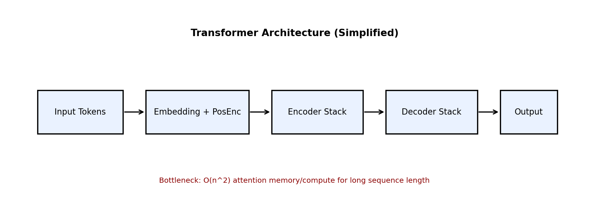

이 문서는 논문의 핵심 개념을 이해하는 데 집중합니다. 실험 수치와 비교표는 실험 리포트로 분리했습니다.
기존 RNN/LSTM 계열은 긴 문장을 처리할 때 병렬화가 어렵고, 멀리 떨어진 단어 관계를 학습하기 어렵다는 문제가 있었습니다. Transformer는 이 문제를 Self-Attention으로 해결해 학습 속도와 문맥 이해를 동시에 개선했습니다.

블록 역할: 입력 토큰은 임베딩+위치정보를 더해 인코더로 들어가고, 디코더는 이전 토큰과 인코더 출력을 함께 사용해 다음 토큰 분포를 만듭니다.
데이터 흐름: Input -> Embedding+Positional Encoding -> Encoder Stack -> Decoder Stack -> Linear+Softmax.
병목: Self-Attention은 시퀀스 길이 n에서 O(n^2) 연산/메모리 비용이 들기 때문에 긴 문맥에서 비싸집니다.
Attention(Q,K,V)=softmax((QK^T)/sqrt(d_k))VMultiHead(Q,K,V)=Concat(head_1,...,head_h)W^Ohead_i=Attention(QW_i^Q,KW_i^K,VW_i^V)기호: Q(질의), K(키), V(값), d_k(키 차원), h(헤드 수).
sqrt(d_k)가 필요한 이유